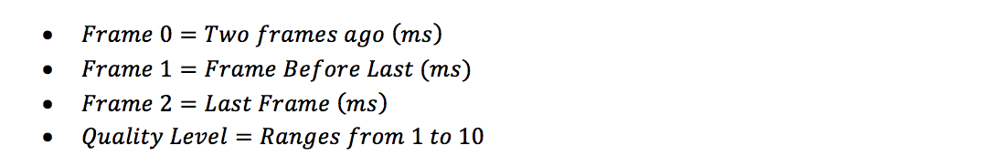
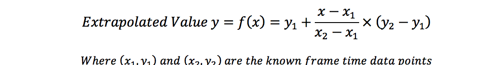
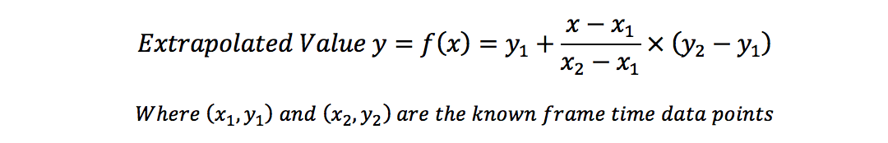
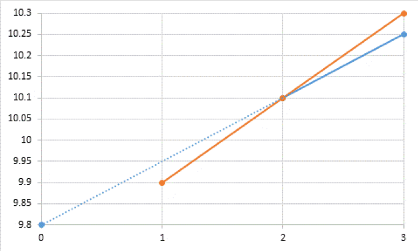

Problem made by Lockheed Martin, is CodeQuest 2017 Problem 13
This problem has a difficulty of 65
Virtual Reality (VR) has exploded into the consumer market in recent years due to advances in technology and falling costs. Originally focused on gaming experiences, these VR headsets have rapidly expanded into many different industries where they are used throughout design, engineering and manufacturing activities. Your team is in charge of developing a Virtual Reality tool for engineers creating satellites and spacecraft.
One of the biggest challenges in modern VR applications is maintaining high enough performance to avoid reprojection. Reprojection is an algorithm for maintaining a responsive VR experience when performance is low, but causes a number of undesired artifacts such as judder (which can cause motion sickness). Due to the amount of data your VR application will be displaying, you’ve decided to implement an adaptive quality algorithm to minimize reprojection.
Typically, a VR application needs to generate 90 frames (images) per second to maintain a smooth experience. This gives the system approximately 11.1 milliseconds maximum to process each frame. You will be given the time (in milliseconds) that the system took to render each of the previous 3 frames, and the current quality level. Your program should print the quality level to be used by the VR application for the next frame.
Adaptive Quality Algorithm:
Your program will need to decide what to do based on the three previous frame processing times. You will have the following four data points:

Since your VR program would like to have at least 90 frames per second, the target time per frame is:
Your algorithm will also take into account the following threshold values:

Your program should implement the following quality algorithm:
1. If the last frame was critical (greater than the high threshold), reduce the quality level by 2.
2. Otherwise, if the last frame was greater than the extrapolate threshold, calculate the linear extrapolation values for the two lines going through frame 2 (the first is frame 0 to frame 2, the second is frame 1 to frame 2). The formula given below may be helpful to you. If the maximum of those two values is greater than the high threshold, reduce the quality level by 2.
3. Otherwise, if all three of the previous frames have values less than the low threshold, increase the quality level by 1.
4. Otherwise, keep the quality level the same.

Consider the first example input below. If we consider the first data point to be time 0, the second to be time 1, and the third to be time 2, then we can extrapolate the value for time 3 two different ways:
• The first way, we use times 0 and 2 to predict that the value for time 3 would be 10.25.
• The second way, we use times 1 and 2 to predict that the value for time 3 would be 10.3.
• For our calculations, we use the larger value, which is 10.3. The graph below illustrates this process:
Example of Extrapolation Technique

The first line of the file Prob13.in.txt will contain a positive integer T denoting the number of test cases that follow. Each test case will have the following input:
• There will be a single line containing the time it took to process each of the previous three frames, earliest first, followed by the current quality level of the video. The values will be separated by a single space. Times will have a precision of tenths of a millisecond.
4
9.8 9.9 10.1 7
6.9 7.8 6.5 3
9.1 8.9 9.5 8
7.6 7.3 7.7 5
For each set of inputs, output the new quality level the VR application should use.
5
3
6
6